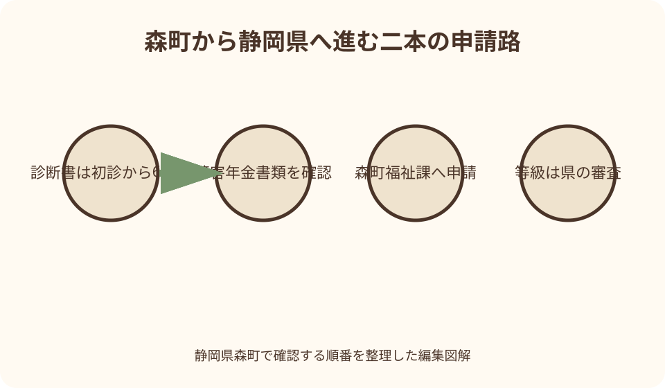
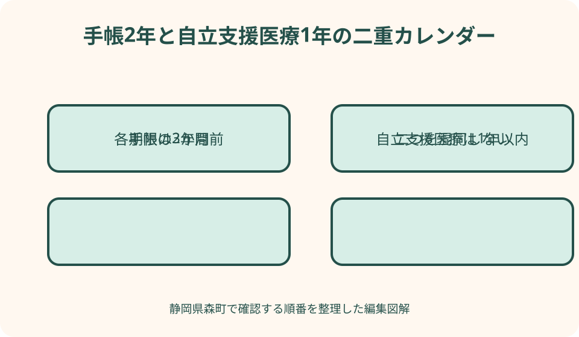

健康・医療・保険｜最終確認 2026-08-10
静岡県森町の精神障害者保健福祉手帳｜新規申請・診断書・2年更新
精神障害者保健福祉手帳は、本人や家族が病名だけで等級を選んで取得するものではありません。森町の窓口を経由して静岡県へ申請し、診断書または精神障害を理由とする障害年金の書類などに基づいて認定されます。診断書で申請する場合は、手帳の対象とする精神疾患の初診日から6か月を経過していることが要点です。書類を集める前に、どちらの申請経路を使うかを森町福祉課へ確認しましょう。
最初に結論：診断書経路と年金経路を分ける
申請準備で最初に決めるのは、医師の診断書を添えるか、精神障害を理由とする障害年金の証書等を使うかです。両方を同時に集め始める前に森町福祉課へ相談します。
診断書経路では、精神障害者保健福祉手帳用の所定様式が必要です。通院先が発行する通常の診断書や、自立支援医療用の診断書で常に代用できるとは限りません。
年金経路では、年金証書の名称だけで対象と決めず、障害年金の原因となった障害、必要な写し、照会への同意書など、静岡県と森町が求める一式を確認します。
等級は1級、2級、3級がありますが、本人が希望する区分を申請書へ書いて決めるものではありません。診断や日常生活・社会生活の状態などを基に審査されます。
手帳の目的と申請先
森町は、精神障害のある人の社会復帰、自立、社会参加を促し、各種サービスを利用しやすくするための手帳と説明しています。治療内容を証明するだけの書類ではありません。
森町に住民登録がある人の申請窓口は役場福祉課です。町が窓口となり、認定・交付に関する審査は静岡県側で行われるため、提出した日に手帳が交付される仕組みではありません。
通院先が町外や県外にあっても、申請先は原則として居住地の市町です。入院中、施設入所中、住民票と居所が異なる場合は、どの市町が窓口かを先に確認します。
申請するかどうかは本人の選択です。家族や支援者は書類確認や移動を手伝えますが、本人の同意を置き去りにして申請や情報共有を進めないようにします。
対象を病名だけで決めない
精神障害者保健福祉手帳は、精神疾患の状態と、それによる日常生活・社会生活上の制約を総合して認定する制度です。同じ診断名でも生活への影響は人によって異なります。
インターネットの病名一覧や体験談から、自分は何級になると予測しないでください。厚生労働省の診断書記載要領も、病歴、治療経過、生活状況など多様な情報を総合する考えを示しています。
現在仕事や学校へ通えていることだけで対象外とは決まりません。反対に、通院期間が長いことだけで交付や特定等級が約束されるものでもありません。
申請可能性を知りたいときは、主治医へ『手帳用診断書を作成できる状態か』を相談し、制度上の持ち物や経路は森町福祉課へ確認します。役割を分けると質問が明確です。
初診日から6か月という要件
診断書による申請では、手帳の交付を求める精神疾患について、初めて医師の診療を受けた初診日から6か月以上を経過した時点の診断書であることが要点です。
現在の医療機関より前に、同じ精神疾患について別の医療機関を受診していた場合、前医の初診日が関係することがあります。転院日を初診日だと自己判断しません。
前の医療機関名や受診時期が曖昧なら、分かる範囲の診察券、紹介状、お薬手帳、家族の記録を主治医へ示します。診断書にどの日を記すかは医師が確認します。
6か月を経過したことは、自動的に手帳の対象になるという意味ではありません。申請できる時期の要件と、精神障害の状態を審査することは別に考えます。
診断書で申請する準備
まず森町福祉課または静岡県の案内から、現在使う手帳用診断書の様式を確認します。医療機関に様式が備わる場合もありますが、古い様式でないかを確かめます。
診察時には、初診日、転院歴、入院歴、現在の治療、生活上困っている場面、利用している福祉サービスを正確に伝えます。よく見せる・重く見せるための説明は不要です。
診断書の作成には日数と文書料がかかる場合があります。発行予定日、費用、受取方法、書類の有効な取扱期間を医療機関と森町へ確認して予定を立てます。
受け取った診断書は、封を開けてよいかを医療機関の指示で確認します。訂正や不足が疑われても本人が書き足さず、発行した医療機関または窓口へ戻します。
障害年金証書等で申請する準備
精神障害を理由とする障害年金を受給している場合、診断書に代えて年金証書等を添える経路があります。老齢年金や遺族年金の証書を同じものとして扱わないでください。
年金証書の写しのほか、直近の年金振込通知書、年金事務所等への照会同意書などを求められる場合があります。現在の必要書類を森町福祉課で確認します。
複数の傷病が関係する年金や、証書から精神障害が理由と分かりにくい場合は、追加確認が必要になる可能性があります。本人や家族が対象だと断定しません。
年金の等級と手帳の等級は制度上の名称が似ていますが、すべての申請で同じ結果になると一般化できません。県の確認を受け、交付通知で最終結果を見ます。
新規申請の持ち物をそろえる
静岡県は、所定の診断書または障害年金証書、顔写真、印鑑を持って居住する市町へ申請するよう案内しています。森町はマイナンバーと本人確認資料も示しています。
顔写真は静岡県案内で縦4センチ、横3センチです。撮影時期、帽子や背景、写真裏面の記載など細かな条件は、提出前に森町へ確認してください。
マイナンバーカードを使う場合と、個人番号通知カード等を使う場合では、身元確認書類の組合せが異なります。期限切れや記載住所の違いがないかを見ます。
印鑑の要否や代理提出時の持ち物は運用変更があり得ます。古い町ページの一覧だけで決めず、申請日に必要な物を福祉課へ電話で確定します。

顔写真を付ける意味
顔写真は本人確認に使われ、静岡県は写真が添付されていない手帳では利用できないサービスがあると説明しています。新規申請時に必要性を確認します。
写真撮影が本人の負担になる場合は、対応できる撮影方法や提出時期を森町へ相談します。家族が古い写真を無断で切り取って使わないようにします。
手帳を身分証明として提示する場面がある一方、すべての機関が同じ本人確認書類として受け付けるわけではありません。利用先ごとに確認してください。
写真付き手帳を第三者へ見せると、障害に関する情報も伝わります。本人が必要な場面を選び、コピーを提出するときは目的と保管方法を確認します。
森町窓口から静岡県審査まで
役場福祉課で申請書と添付資料が受け付けられた後、静岡県の認定手続へ進みます。診断書による申請は精神保健福祉センターで判定される流れが国の実施要領に示されています。
提出時には、不足資料がないか、控えを受け取れるか、結果連絡の方法、標準的な期間を尋ねます。審査期間は個別状況で変わり得るため、特定の日数を見込んで契約しません。
追加資料や診断書の照会が必要になった場合は、連絡先へ応答できるようにします。転居や電話番号変更があれば、審査中でも森町へ知らせます。
交付、非該当、等級などの結果は正式な通知で確認します。家族や支援者の予想、主治医の説明だけを最終決定として扱わないでください。
等級は1級・2級・3級
精神障害者保健福祉手帳には、障害の程度が重い順に1級、2級、3級があります。数字は本人の価値や努力を示す順位ではありません。
診断書では、精神疾患の状態だけでなく、日常生活能力や社会生活上の制約などが記載されます。一つの症状や通院回数だけで等級は決まりません。
年金証書等で申請する場合にも、本人が手帳等級を自由に選べるわけではありません。必要書類と照会結果に基づく手続を待ちます。
状態が変化したときは等級変更申請が可能ですが、家族が『重くなったはず』『軽くなったはず』と決めません。主治医と森町福祉課へ時期と資料を相談します。
有効期間2年と更新時期
手帳の有効期間は2年間で、継続して利用するには更新申請が必要です。自動更新ではなく、期限が来る前に本人側で手続を始めます。
国の実施要領では、有効期限の日の3か月前から更新申請ができます。手帳の有効期限欄を確認し、その3か月前の日を家族カレンダーへ記します。
更新は新規申請に準じ、診断書または年金証書等の経路を確認します。前回と同じ経路を必ず使えるとは限らないため、現在の受給状況と必要資料を見直します。
期限を過ぎた場合の扱い、空白期間、サービスへの影響は個別確認が必要です。遅れたことを理由に諦めず、気付いた日に森町福祉課へ相談します。
更新の3か月前にすること
最初に手帳の有効期限、住所、氏名、顔写真、現在の等級を確認します。次に前回の申請経路と、現在の通院先・年金受給状況を照合します。
診断書経路なら、診察予約と作成期間を考えて早めに主治医へ相談します。診断書を急いでもらえると決めつけず、医療機関の手順に従います。
年金経路なら、年金証書、直近の通知書などが手元にあるかを探します。紛失している場合の再発行や代替資料は、年金機関と森町へ確認します。
提出後も旧手帳を捨てません。更新結果を受け取るまでの提示方法や、期限前後のサービス利用は、それぞれの提供機関へ確認します。
住所・氏名変更と紛失・破損
住所や氏名など手帳の記載事項が変わったときは、市町への届出が必要です。住民票の異動だけで手帳の表示が自動更新されると考えないでください。
森町内の転居、町外への転出、町外からの転入では、届出先と手帳の書換え方法が異なる可能性があります。転出前と転入後の市町へ確認します。
紛失や破損では再交付申請ができます。本人確認、写真、届出書など必要な物を森町福祉課へ尋ね、見つからない間のサービス利用方法も確認します。
紛失した手帳が後から見つかった場合は、古い手帳を自己判断で使い続けません。返却や廃棄の方法を交付窓口へ確認してください。
自立支援医療とは別の制度
精神障害者保健福祉手帳と自立支援医療（精神通院）は別の制度です。手帳が交付されれば通院医療費が自動的に変わる、または自立支援医療を使えば手帳も自動交付されるわけではありません。
森町公式は、自立支援医療の有効期間を1年以内と案内しています。手帳は2年のため、更新時期を同じだと思い込むと片方の期限を逃す可能性があります。
診断書で両制度を同時申請する場合に手帳用診断書を使う旨が森町ページにありますが、全員が同時申請できるとは限りません。現在の様式と要件を窓口へ確認します。
医療費の相談が主目的なら、自立支援医療の対象、指定医療機関、所得区分を別に尋ねます。手帳取得の可否だけで通院継続を決めないでください。

交付後に利用できる制度を確認する
手帳交付後に利用できる支援は、等級、所得、年齢、世帯、利用目的などで条件が異なります。手帳を持てばすべてのサービスが自動適用されるわけではありません。
森町公式は、税の控除やタクシー券などを例示しています。実際の対象等級、申請時期、必要資料は各制度の担当窓口で確認します。
軽自動車税の減免、公共交通、施設料金、携帯電話等の民間サービスは、それぞれ基準と受付先が違います。古い比較表だけで利用可否を決めません。
勤務先や学校へ手帳の情報を伝えるかは、必要な配慮と本人の意向を基に考えます。提出を求められた場合も、利用目的、閲覧者、保管期間を確認します。
家族・支援者が手伝う範囲
家族は、期限管理、写真撮影、診察予約、窓口への同行、提出控えの保管を支援できます。本人ができる部分まで奪わず、希望する助けを確認します。
診断書の内容を家族が作ることはできません。生活上の困りごとを主治医へ伝える際は、本人の説明と家族の観察を区別し、事実と推測を混ぜないようにします。
代理提出の可否、委任状、代理人の本人確認書類は森町へ事前に確認します。『家族だから署名できる』と判断して本人欄を代筆しないでください。
審査結果や診断書には慎重に扱う情報が含まれます。家族グループや職場へ画像を送る前に、本人同意と送信先を確認し、不要な共有を避けます。
申請記録の保管方法
申請日、窓口、申請区分、添付資料、受取った控え、問い合わせ先を一枚にまとめます。診断書そのものを家族全員へ共有せず、保管場所だけ伝える方法もあります。
診断書発行日、初診日、申請日、有効期限は役割が異なります。四つの日付を別欄へ置くと、更新時にどの日を基準に準備するか迷いません。
年金証書やマイナンバー資料の写しは、手帳申請資料と分け、鍵のある場所またはアクセス制限した電子保管へ置きます。公共のコピー機に原稿を残さないようにします。
交付後は手帳の番号、有効期限、紛失時の連絡先を控えます。手帳全体の写真をスマートフォンへ保存する場合は、端末のロックとクラウド共有設定を確認します。
精神障害者保健福祉手帳の良い点
良い点は、精神障害による生活上の制約を、公的な手帳として支援や配慮の相談へつなげられることです。診断名を毎回一から説明する負担を減らせる場面があります。
税、移動、就労、福祉サービスなど複数の制度を確認する入口になります。ただし、個別サービスの条件は手帳の等級だけで決まらないため、担当ごとに申請します。
2年ごとの更新は手間がかかる一方、現在の状態を改めて確認する機会になります。主治医との相談や生活状況の振り返りを、更新準備へ組み込めます。
申請するか迷う段階でも、森町福祉課へ相談すれば、手帳、自立支援医療、障害福祉サービスの違いを整理する入口になります。申請を強制される相談ではありません。
森町の案内に注文したい点
注文したい点は、森町のページに新規申請の持ち物は載る一方、診断書経路と年金経路の違い、県審査、2年更新を一続きで説明する情報が少ないことです。
町ページの写真サイズ表記が画面上で欠けて見える場合があるため、縦4センチ・横3センチという県案内と同じ表記を明瞭に掲載してほしいところです。
更新を3か月前から行えること、代理提出、標準的な交付連絡、期限を過ぎた場合の相談方法も、よくある質問として示されると本人と家族が動きやすくなります。
手帳と自立支援医療の有効期間が異なるため、二本の更新予定を一枚で確認できる町独自カレンダーがあると、通院を続けながら手続する人の負担を減らせます。
診断書がすぐ用意できない場合の代案・結論
初診日から6か月を経過していない場合は、申請できる時期を主治医と森町へ確認します。その間の通院や生活支援について、別に利用できる相談先があるかを尋ねます。
診断書作成に時間がかかる場合は、有効期限と更新受付開始日を窓口へ伝え、いつまでに何を提出すべきか確認します。家族が医師の記載を急がせて補うことはできません。
年金証書を紛失した場合は、年金機関での再発行や代替資料を確認します。手元の振込通帳だけで申請できると決めず、森町が求める一式をそろえます。
結論として、森町福祉課で申請経路と最新様式を確定し、診断書なら初診日から6か月、年金なら対象となる年金書類を確認し、有効期限3か月前から更新へ進みます。
大石の視点：期限を本人の負担にしない
大石の視点では、申請を本人の努力を測る試験にしないことが大切です。書類を集める力と障害の状態は別であり、家族は期限や移動という事務を支えられます。
森町北部から通院先と役場の両方へ行く場合、診断書受取日と申請日を同日にできるとは限りません。往復時間、体調、付き添いを含めて二段階の予定を組みます。
困りごとを強く見せるために生活を悲観的に語る必要も、軽く見せるために隠す必要もありません。普段できること、支援があればできること、難しいことを分けて伝えます。
交付結果が想定と違っても、本人の価値が決まるわけではありません。正式な理由や次の手続を窓口へ確認し、必要な暮らしの支援を手帳だけに依存させないことが重要です。
二つの固有図解で申請を確認する
一つ目の図解は『森町から静岡県へ進む二本の申請路』です。診断書経路は初診日確認と医療機関、年金経路は証書等と照会確認を経て、森町福祉課から県審査へ合流します。
二つ目は『手帳2年・自立支援医療1年の二重カレンダー』です。同じ開始月の例でも更新周期が違うことを示し、それぞれの有効期限3か月前を別の色で記します。
図解には特定の病名から等級へ直結する矢印を置きません。等級は県の審査で決まること、ウェブ記事では結果を予測できないことを中央に示します。
印刷した図の余白へ、初診日、診断書依頼日、申請日、有効期限を本人が書けます。詳しい診断内容は図へ書かず、鍵のある申請記録で保管します。
一次情報の読み分け
森町の『心身に障害のある人のために』は、町の申請窓口と持ち物、自立支援医療との地域手続を確認する資料です。画面表示が不明瞭な項目は福祉課へ確認します。
森町子育て応援サイトの『手帳など』は、子ども・若者の家族が手帳制度へたどる補助入口です。具体的な新規・更新の持ち物は主たる町ページと県案内を優先します。
静岡県の精神障害者保健福祉手帳ページは、写真サイズ、初診から6か月、等級、有効期間、変更・再交付という県共通事項を確かめる資料です。
厚生労働省の実施要領と診断書記載留意事項は、2年更新、3か月前申請、県審査、初診日の考え方を示します。本人の等級を自己判定する表として使いません。
まとめ：経路・審査・更新の三段階
経路では、診断書か精神障害を理由とする障害年金証書等かを森町福祉課と確認します。写真、マイナンバー、本人確認資料を含む最新の持ち物をそろえます。
審査では、森町窓口から静岡県へ書類が進みます。等級は1級から3級ですが、診断名や本人希望だけで決めず、正式な交付通知を待ちます。
更新では、2年間の有効期限を手帳で確認し、3か月前から準備します。住所・氏名変更、紛失・破損、状態変化があれば更新時期を待たず町へ相談します。
精神障害者保健福祉手帳の記載は2026年8月10日時点の一次情報に基づき、個別の診断、交付可否、等級を示すものではありません。最新様式と本人の申請方法は森町福祉課で確認してください。
公式情報・確認先
掲載内容は次の一次情報を基礎に整理しました。営業、料金、催し、交通は変わるため、出発前または手続き前にリンク先で最新情報を確認してください。
- 心身に障害のある人のために（静岡県森町、2026-08-10確認）
- 心身に障害のある人のために（担当課ページ）（静岡県森町、2026-08-10確認）
- 手帳など（静岡県森町、2026-08-10確認）
- 精神障害者保健福祉手帳（静岡県、2026-08-10確認）
- 障害者手帳について（厚生労働省、2026-08-10確認）
- 精神障害者保健福祉手帳制度実施要領（厚生労働省、2026-08-10確認）
- 精神障害者保健福祉手帳の診断書記入に当たって留意すべき事項（厚生労働省、2026-08-10確認）